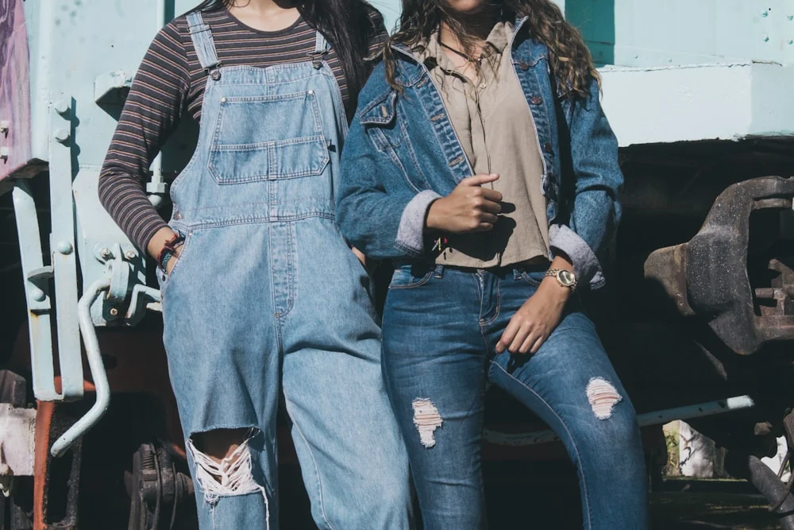

Mekikli tezgâhta dokunan selvedge kumaş, İstanbul’daki atölyemizde kesiliyor. Her parçanın kendi lot numarası var.
13,5 ons ham denim, mekikli tezgâhta dar enli dokunur. Kenarındaki kırmızı çizgi kumaşın kendi kenarıdır — kesilmez, sökülmez. Pantolonun paçasını katladığında görürsün.
Yıkama sayısı arttıkça renk açılır ve kumaş sana göre oturur. Biz bunu bir kusur değil, ürünün ömrü sayıyoruz.